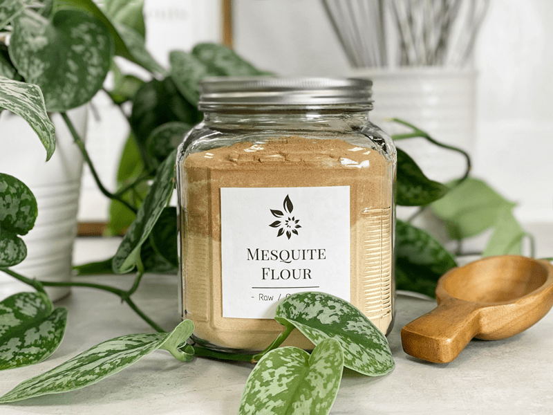

Mesquite Powder / Flour
On every post you read about sweeteners, please keep this thought in mind… Just because the dessert recipes on my site (or any other raw site) are raw, created on the foundation of whole foods, and are healthier than the typical SAD (Standard American Diet) desserts… they are still desserts. They should be consumed with the same sensibilities.

I am not here to debate which sweetener is better than the other or whether or not you should consume them. You know your own health better than anyone else, so you will need to make those determinations for yourself.
To Use or Not to Use…
Sweeteners, in general, tend to face controversy at some point or another. My suggestion is to use sweeteners in their raw and purest form, so be sure to read the labels, and if you are concerned, called the manufacturers.
Some raw sweeteners are vegan, and some are not, you decide on what the priority is for you. All we can ask of ourselves is to make the best possible decisions with the information we are given and what is available to us.
Why do you use several sweeteners in one recipe?
I like to mix different sweeteners for several reasons. By layering multiple sweeteners, I can sometimes reduce the overall glycemic load, as well as create layers of flavor and sweetness. Plus, different sweeteners respond textually in unique ways. For instance, dates not only add sweetness to a recipe but also work as a binder, holding cakes, cookies, and bars together. To keep the sugar levels down, I might add stevia, which bumps up the sweet level without adding more sugars or calories. In raw recipes, you always need to take your health needs in account, the texture that you want from a recipe, and the overall flavor.
Nutritional Data:
Mesquite flour is a high protein powder that contains calcium, magnesium, potassium, iron, and zinc, and is rich in the amino acid lysine. Its low GI of 25 helps maintain stable blood sugar levels and makes it a great sweet option for people with diabetes.
How does it taste?
It is a fine powder that has an incredibly rich, nutty, smoky, molasses-like flavor with a hint of caramel.
How do I use it?
Mesquite is also great in raw desserts. It is one of those flours that don’t require cooking to taste great. Not only does it add flavor, but it also helps raw cookies, balls, and crusts bind together. Another great way to enjoy it is by tossing in a few tablespoons in a smoothie.
© AmieSue.com